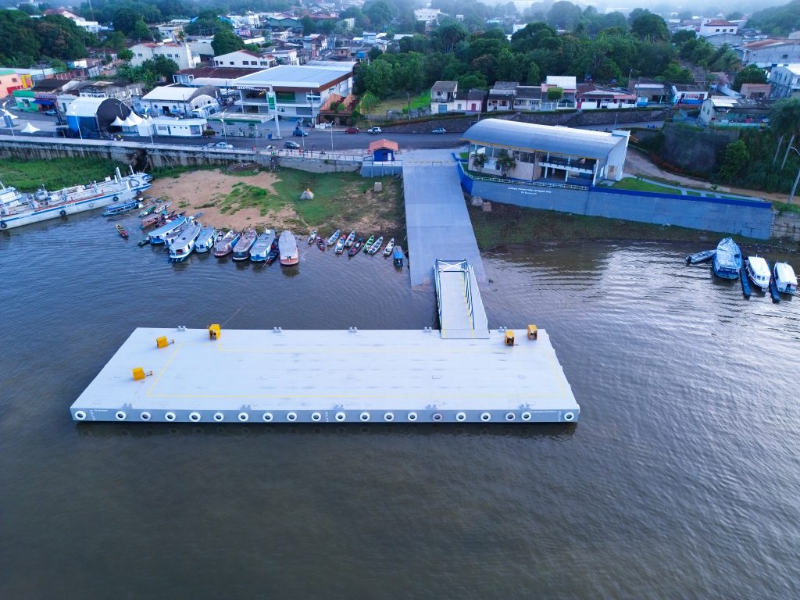
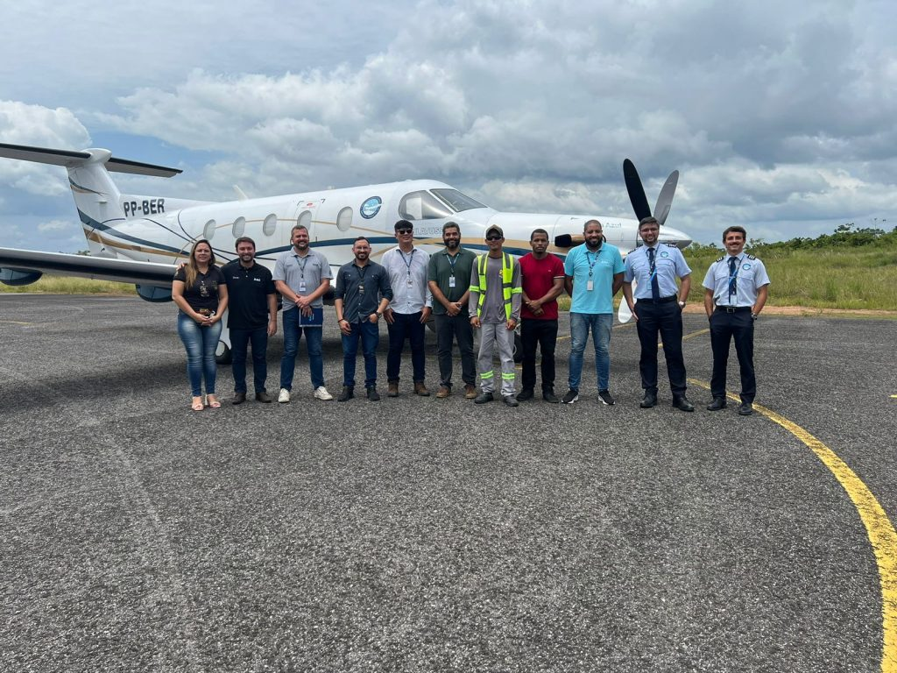
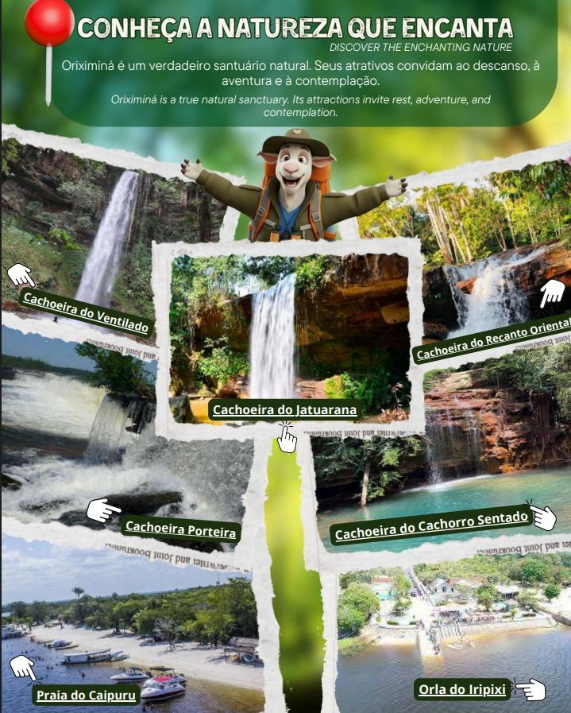

Rota Fluvial
Principais rotas fluviais para se locomover na região.
As principais rotas para e a partir de Oriximiná envolvem viagens fluviais para cidades vizinhas, estradas de terra e asfalto na região do Baixo Amazonas, e o acesso à Rota Jatuarana para fins turísticos locais.
Ler Mais
Principais rotas fluviais para se locomover na região.

Principais rotas aeras para se locomover na região.

Principais rotas terrestres para se locomover na região..

Principais rotas turisticas para se locomover na região..